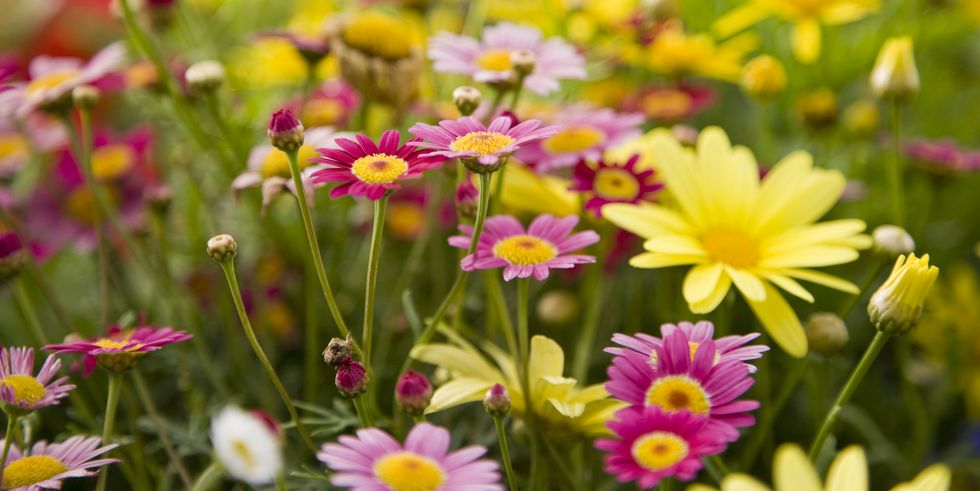

Daisy Flower
When we hear the word “daisies,” the first thing that comes to mind are the
small white flowers with bright yellow centers that we used to pluck in
middle school while chanting, “He loves me, he loves me not.” While the
common daisy has multiplied so rapidly in the U.S. that it’s now considered
to be an invasive weed, the truth is that daisies come in thousands of
different varieties beyond the classic white blooms that we know and love.
Are you thinking about adding daisies to your garden this spring? If so, you’re
in luck as daisies are some of the easiest flowers to grow.
